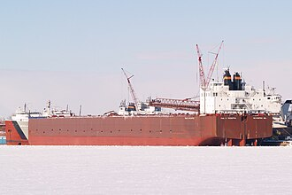
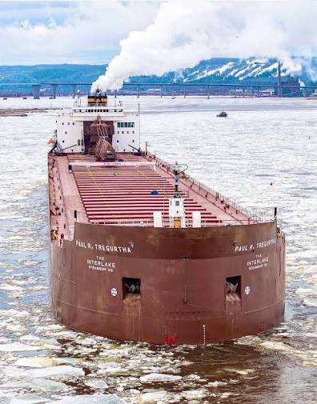

Overveiw
the Paul r tregurtha is a great lakes cargo tanker. knwon also as the "Big paul" or "Fancy De lacey". This ship is the largest ship on the great lakes!

Ship specs
The Big paul is an impressive ship. from bow to stern shes earned her title as queen of the great lakes!
- Title: MV
- Owner: Interlake steamship company
- Operator: Interlake steamship company
- Home port: Wilmington, Delaware USA
- Builder: American ship building company
- launch date: Febuary 4th 1981
- Call sign: WYR4481
- Length: 1013.5 feet
- Beam: 105 feet

Her work
The Tregurtha is a bulk cargo carrier built with iron ore in mind. she also serves as an executive, non public passenger vessel. her tonage sits at 14497 NRT.
S.O.S! S.O.S!
The Tregurtha has had two grounding incidents. at 0300 august 15 2012 she ran around much like the Evergiven in the suez canal just outside of Sault Ste. Marie and was not freed for 4 days. On september 20th 2014 she had a similar accident in Duluth near Bayfront festival park.
Despite these incidents the ship is still active and working for her intended purpose. no casualties or injuries were reported during these incidents.